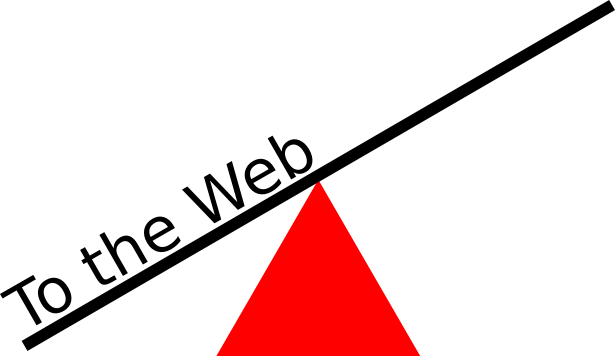
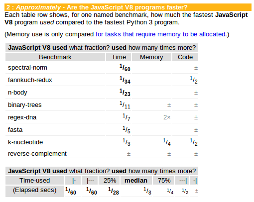
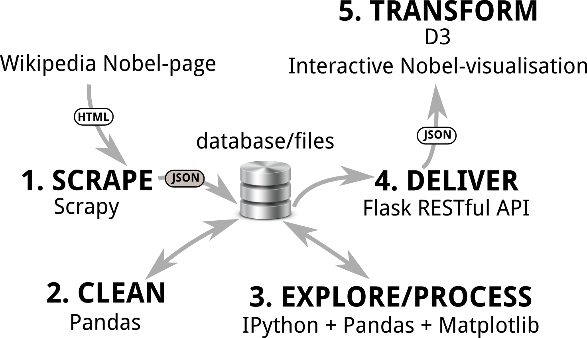
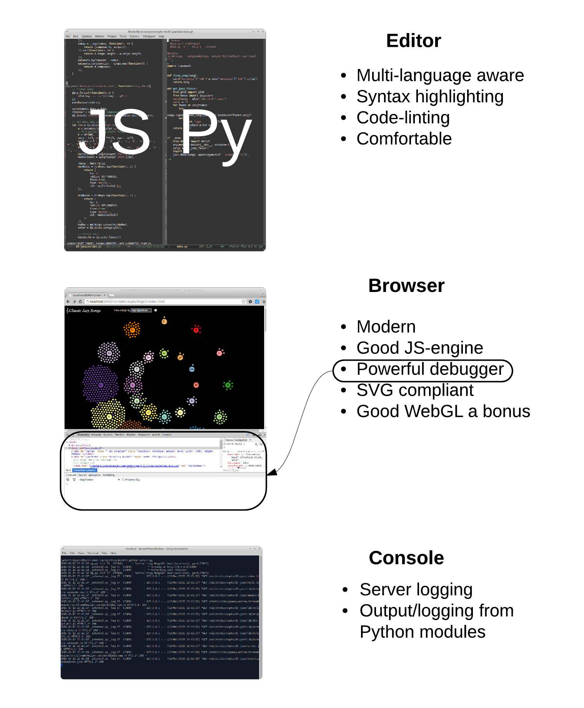
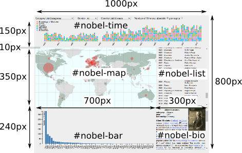
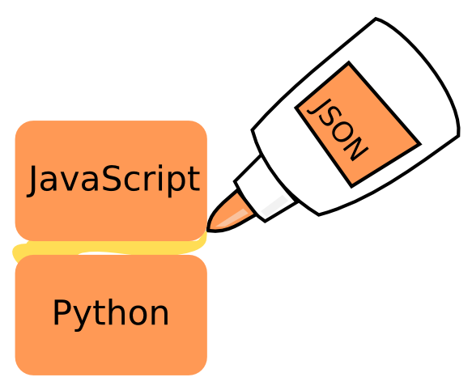
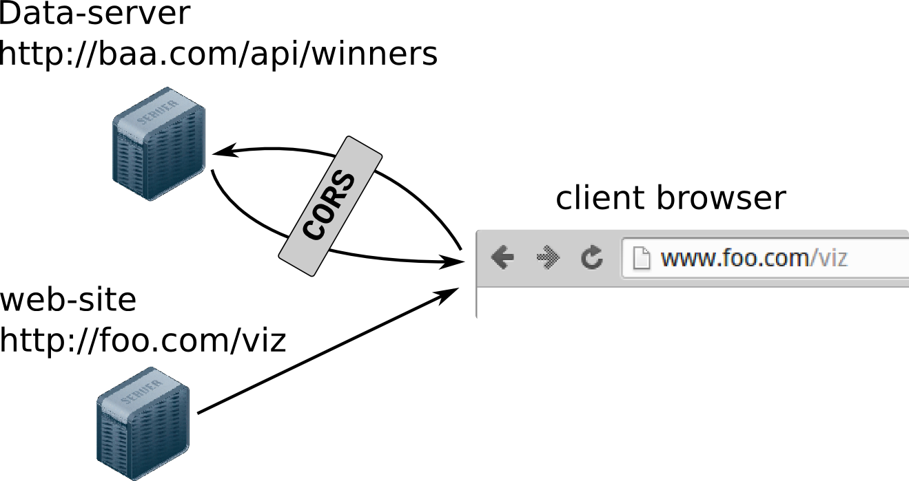

To the Web and Beyond
PyData-London 2016
Created by Kyran Dale / @kyran_dale
Beyond
Beyond
Beyond
Beyond
Beyond
Leave Python for a year
import asyncio
async def http_get(domain):
reader, writer = await asyncio.open_connection(domain, 80)
writer.write(b'\r\n'.join([
b'GET / HTTP/1.1',
b'Host: %b' % domain.encode('latin-1'),
b'Connection: close',
b'', b''
]))
async for line in reader:
print('>>>', line)
writer.close()
loop = asyncio.get_event_loop()
try:
loop.run_until_complete(http_get('example.com'))
finally:
loop.close()
Beyond
Leave JavaScript for a week
class Person {
constructor(name) { // constructors
this.name = name;
}
// ...
}
class Citizen extends Person { // inheritance
constructor(name, nationality) {
super(name); // call parent constructor with super
this.nationality = nationality;
}
// ...
}
let x = [0, 1, 2, 3];
x.map(x => console.log(x * x)); // fat arrow function
async function updateData(fname){ // async + await
try{
let data = await getJSON(fname); // using a Promise
updateChart(data);
// ...
} catch (err) {
// ...
Beyond
JavaScript's Synactic Sugar
- Modules
- Classes
- Promises + async
- Generators
- Block scoping with let
- Etc..
Why Dataviz Must Go To the Web
Why Dataviz Must Go To the Web
The humble URL as a token of exchange.
- Cloud servers in a few clicks (AWS, Heroku, DigitalOcean etc.)
- JFiddle, JSBin et. al. - demo live JavaScript visualisations.
- http://blockbuilder.org/ - Github gists to D3 visualisations (11,000 examples!).
- Rich ecosystem, skills freely traded, standards rising inexorably.
- Barriers to entry dropping all the time...
Nobody Likes Me, Everybody Hates Me...
Coming to terms with JavaScript
JavaScript's Development
In the Beginning was jQuery
var btns = document.querySelectorAll('button');
btns[0].addEventListener('click', function(){
// ...
});
// with jQuery
$('button').click( function(){ // ...
JavaScript's Development
In the Beginning was jQuery
- Rag-bag of DOM-hacks
- Nice utility libraries like ajax (XMLHttpRequest)
- Tendency to kitchen-sinkery, kinda messy/hacky
JavaScript's Development
- JS a 'toy' language.
- Ugly, kludgy syntax
- Slow interpreter
- Generally small code-bases
- Difficult to scale
JavaScript's Development
No Imports
<body>
<-- ... -->
<script src="//code.jquery.com/jquery-1.11.0.min.js"></script>
<script src="http://d3js.org/d3.v3.min.js"></script>
</body>
JavaScript's Development
The bad and the ugly
function foo(a){
a = typeof a !=== 'undefined' ? a : 42;
// ...
}
JavaScript's Development
The bad and the ugly
var names = ['Tom', 'Dick', 'Harriet'];
var l = names.length;
for (var i = 0; i < l; i++) {
console.log(names[i]);
}
ECMAScript 2016
Better all the time
- Modules!!, e.g. `import defaultMember from "module-name";'
- Default parameters!, e.g. `def foo(bar, baz=10){...'
- No more for loops, e.g. `[1, 2, 3].forEach(d => console.log(d));'
Shifting Bits
JS smokes Python for speed
JavaScript's Development
If JavaScript is good and getting better why bother with Python?
JavaScript's Development
Nothing to remotely compare in JS ecosystem with Python's data-processing stack. NumPy, SciPy, Pandas, scikit-learn etc. are all in different league to anything JS has to offer. Data-processing with JS is currently a pain.
Dataviz Toolchain
Web-ward Options for Pythonistas
- Jupyter (IPython) notebook with embedded charts.
- Plotly, Bokeh et. al.
- Vega (with Vincent) visualisation grammar.
- Bite the JavaScript bullet (D3 et. al.)...
Embedded Charts with Jupyter Notebook

Outside the JavaScript Workflow
- Limits of transpiled Python to JS.
- Powerful JS development tools hard to apply.
- Indirection will add to debugging frustrations.
- Reliant on JS experts and request tickets.
Hacks We Have Known
Empowerment close to the metal
Hacks We Have Known
Empowerment close to the metal
Hacks We Have Known
Empowerment close to the metal
var fixLabels = function() {
labelPos.sort(function(a, b) {
return a.pos > b.pos;
});
var labelToPos = {};
labelToPos[labelPos[0].name] = labelPos[0].pos;
labelPos.forEach(function(d,i){
if(i === labelPos.length-1){return;}
var dist = labelPos[i+1].pos - d.pos;
if(dist < MIN_LABEL_GAP){
labelPos[i+1].pos = d.pos + MIN_LABEL_GAP;
}
});
labelPos.forEach(function(d) {
labelToPos[d.name] = d.pos;
});
d3.selectAll(".line-label")
.transition()
.duration(1000)
.attr("transform", function(d) {
var yPos = labelToPos[sanitizeName(d.name)];
return "translate(" + x.range()[1] + ',' + yPos + ")"; });
};
Getting in the Game
Simplify your life
- Avoid frameworks like Angular, React (Flux), Meteor etc..
- Innoculate against JS Toolitus - Grunt, Gulp, Yeoman, Bower etc..
- Learn the basic HTML elements, <div> content blocks, <select> selectors etc..
- Invest some time learning Scalable Vector Graphics (SVG) elements.
- Don't worry about LESS or SASS for now - vanilla CSS is fine.
- In fact, vanilla everything is a pretty good place to start.
Your Webdev Tools
Decent editor, browser developer tools (Chrome by a mile), console
The Single-page App
nobel_viz
├── config.py
├── nobel_viz.py
├── notes.md
├── static
│ ├── css
│ ├── data
│ ├── images
│ ├── js
│ └── lib
└── templates
└── index.html <--- entry point for Single-page app
Design Your Visualisation
The HTML backbone
index.html
<link rel="stylesheet" href="style.css" type="" media="screen" />
<body>
Selected winners
Year Category Name
<-- ... -->
<-- JAVASCRIPT FILES -->
</body>
A Little CSS...
// ...
#nobel-map, #nobel-winner, #nobel-bar, #nobel-time, #nobel-list{
position:absolute;
}
#nobel-time{
top:0;
height:150px;
width:100%;
}
#nobel-map{
background:azure;
top:160px;
width:700px;
height:350px;
}
// ...
Program Your Visualisation
var query_winners = 'winners?projection=' +
JSON.stringify( {"mini_bio":0, "bio_image":0} );
var q = queue()
.defer(d3.json, "static/data/world-110m.json")
.defer(d3.csv, "static/data/world-country-names-nobel.csv")
.defer(d3.json, "static/data/winning_country_data.json")
.defer(nbviz.getDataFromAPI, query_winners)
.await(ready);
function ready(error, worldMap, countryNames, countryData, winnersData) {
// ... COOL DATA-DRIVEN VISUALISATION
}
Delivering the Data
JavaScript Object Notation
An Array of JSON Objects
[
{
"category": "Physiology or Medicine",
"country": "Argentina",
"date_of_birth": "1927-10-08T00:00:00.000Z",
"date_of_death": "2002-03-24T00:00:00.000Z",
"gender": "male",
"link": "http:\/\/en.wikipedia.org\/wiki\/C%C3%A9sar_Milstein",
"name": "C\u00e9sar Milstein",
"place_of_birth": "Bah\u00eda Blanca , Argentina",
"place_of_death": "Cambridge , England",
"text": "C\u00e9sar Milstein , Physiology or Medicine, 1984",
"year": 1984,
"award_age": 57
}
...
]
Cloud Based RESTful API
Creating a Cloud-based RESTful API with Heroku and Python-EVE
Configure Python-EVE RESTful API with settings.py
# settings.py
import os
# We want to seamlessy run our API both locally and on Heroku. If running on
# Heroku, sensible DB connection settings are stored in environment variables.
MONGO_HOST = os.environ.get('MONGO_HOST', 'localhost')
MONGO_PORT = os.environ.get('MONGO_PORT', 27017)
MONGO_USERNAME = os.environ.get('MONGO_USERNAME', 'user')
MONGO_PASSWORD = os.environ.get('MONGO_PASSWORD', 'user')
MONGO_DBNAME = os.environ.get('MONGO_DBNAME', 'nobel_prize')
X_DOMAINS = '*'
HATEOAS = False
PAGINATION = False
URL_PREFIX = 'api'
DOMAIN = {'winners_full':{
'item_title': 'winners',
'schema':{
'country':{'type':'string'},
'category':{'type':'string'},
'name':{'type':'string'},
'year':{'type': 'integer'},
'gender':{'type':'string'},
'mini_bio':{'type':'string'},
'bio_image':{'type':'string'}
},
'url':'winners'
}}
Creating a Cloud-based RESTful API with Heroku and Python-EVE
Flask-based EVE server
# server_eve.py
from eve import Eve
app = Eve()
if __name__=='__main__':
app.run(debug=True)
Creating a Cloud-based RESTful API with Heroku and Python-EVE
Necessary Heroku Files
Procfile
web: python server_eve.py
requirements.txt
Eve==0.6.1
Creating a Cloud-based RESTful API with Heroku and Python-EVE
$ git init
Initialised empty Git repository in /home/kyran/workspace/docs/pyjsbook/dataviz-with-py
thon-and-js/nobel_viz/api/.git/
$ git add -A
$ git commit -m 'Initial Commit'
[master (root-commit) 340ced1] Initial Commit
4 files changed, 47 insertions(+)
create mode 100644 Procfile
create mode 100644 requirements.txt
create mode 100644 server_eve.py
create mode 100644 settings.py
$ heroku apps:create eve-heroku
Creating ⬢ eve-heroku... done
https://eve-heroku.herokuapp.com/ | https://git.heroku.com/eve-heroku.git
$ heroku addons:create mongolab
Creating mongolab-adjacent-30486... done, (free)
Adding mongolab-adjacent-30486 to eve-heroku... done
Setting MONGODB_URI and restarting eve-heroku... done, v3
Welcome to mLab. Your new subscription is being created and will be available shortly.
Please consult the mLab Add-on Admin UI to check on its progress.
Use `heroku addons:docs mongolab` to view documentation.
$ git push heroku master
Counting objects: 6, done.
Delta compression using up to 8 threads.
Compressing objects: 100% (4/4), done.
Writing objects: 100% (6/6), 1.02 KiB | 0 bytes/s, done.
...
remote: https://eve-heroku.herokuapp.com/ deployed to Heroku
remote:
remote: Verifying deploy... done.
To https://git.heroku.com/eve-heroku.git
Testing the Data API
Grabbing all French Nobel-prize winners
curl -g http://eve-heroku.herokuapp.com/api/winners\?where\=\{\"country\":\"France\"\}
{
"_items": [
{
"category": "Chemistry",
"_updated": "Thu, 01 Jan 1970 00:00:00 GMT",
"name": "Ir\u00e8ne Joliot-Curie",
"gender": "female",
"year": 1935,
"_links": { <1>
"self": {
"href": "winners\/568d03a826a7113f2cc0a86a",
"title": "Winner"
}
},
"country": "France",
"_created": "Thu, 01 Jan 1970 00:00:00 GMT",
"_id": "568d03a826a7113f2cc0a86a",
"_etag": "dcaff67c8e9ab22a6830fec9313ed61c8a1c8ffc"
},
...
"_meta": {
"max_results": 25, <2>
"total": 60,
"page": 1
}
}
Conclusion
Python and JavaScript are the most powerful data-visualisation stack out there. Using both to their full potential opens up a new realm of dataviz possibilities. Robust data web-APIs can be thrown together in a few lines and deployed with relative ease (and getting easier all the time). Minimal webdev templates then allow you to focus your creative energies on what you do best - turning data in engaging, interactive visualisations.